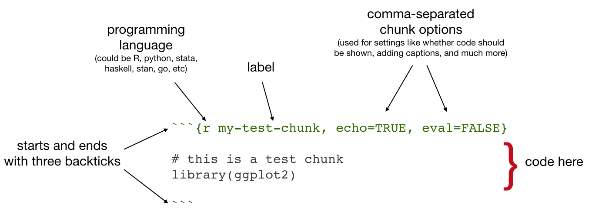

12.3 R Code Chunks
- 실제 R code가 실행되는 부분임
- Code chunk 실행 시 다양한 옵션 존재(본 강의에서는 몇 개의 옵션만 다룰 것이며, 더 자세한 내용은 https://yihui.org/knitr/options/ 또는 R Markdown 레퍼런스 가이드 참조
- Code chunk는
```{r}로 시작되며r은 code 언어 이름을 나타냄. - Code chunk는
```로 종료 - R Markdown 문서 작성 시 단축키
[Ctrl] + [Alt] + [I]를 입력하면 Chunk 입력창이 자동 생성됨 - Code chunk의 옵션 조정을 통해 코드의 출력여부, 코드 출력 시 코드의 출력 형태, 코드의 결과물 출력 조정 가능

Figure 12.2: Chunk anatomy (https://ulyngs.github.io/rmarkdown-workshop-2019 에서 발췌)
자주 활용하는 chunk 옵션
코드 실행 관련 청크
| Chunk 옵션 | Default | 설명 |
|---|---|---|
| eval | TRUE | R 실행(코드 실행 결과)에 대응하는 결과 출력 여부 |
| include | TRUE | 출력 문서에 코드 청크의 내용을 포함할지 여부 |
```{r ex01-1, eval=TRUE}
summary(iris)
hist(iris$Sepal.Length)
```
```{r ex01-2, eval=FALSE}
summary(iris)
hist(iris$Sepal.Length)
```#청크 옵션 eval=TRUE
summary(iris) Sepal.Length Sepal.Width Petal.Length Petal.Width
Min. :4.300 Min. :2.000 Min. :1.000 Min. :0.100
1st Qu.:5.100 1st Qu.:2.800 1st Qu.:1.600 1st Qu.:0.300
Median :5.800 Median :3.000 Median :4.350 Median :1.300
Mean :5.843 Mean :3.057 Mean :3.758 Mean :1.199
3rd Qu.:6.400 3rd Qu.:3.300 3rd Qu.:5.100 3rd Qu.:1.800
Max. :7.900 Max. :4.400 Max. :6.900 Max. :2.500
Species
setosa :50
versicolor:50
virginica :50
hist(iris$Sepal.Length)#청크 옵션 eval=FALSE
summary(iris)
hist(iris$Sepal.Length)소스 코드 출력(텍스트) 결과 관련 청크
| Chunk 옵션 | Default | 설명 |
|---|---|---|
| echo | TRUE | R 실행 결과에 대응하는 코드 출력 여부 |
| results | markup | 출력 결과 포맷 지정을 위한 옵션으로 추가적으로 3 가지 옵션 선택 가능: ‘hide’, ‘asis’, ‘hold’, ‘markup’ |
| error | TRUE | 코드 또는 스크립트에 구문오류 메세지 출력 여부 |
| message | TRUE | 코드로부터 생성된 메세지 출력 여부 |
| warning | TRUE | 경고 메세지 출력 여부 |
echo: 코드 청크에 작성한 R-script 출력 여부 결정echo = FALSE이면 소스 코드 출력 없이 그림 결과만 출력
```{r ex01-2, echo=TRUE}
require(ggthemes) # ggtheme 패키지 불러오기
require(ggpubr) # ggpubr 패키지 불러오기
iris %>%
ggplot(aes(x = Sepal.Length, y = Petal.Width, color = Species)) +
geom_point(size = 5) +
theme_pubclean() +
theme(axis.line = element_line(size = 0.8),
legend.title = element_text(face = "bold", size = 15),
legend.text = element_text(face = "bold", size = 12))
```
```{r ex01-3, echo=FALSE}
require(ggthemes) # ggtheme 패키지 불러오기
require(ggpubr) # ggpubr 패키지 불러오기
iris %>%
ggplot(aes(x = Sepal.Length, y = Petal.Width, color = Species)) +
geom_point(size = 5) +
theme_pubclean() +
theme(axis.line = element_line(size = 0.8),
legend.title = element_text(face = "bold", size = 15),
legend.text = element_text(face = "bold", size = 12))
```# echo = TRUE
require(ggthemes) # ggtheme 패키지 불러오기
require(ggpubr) # ggpubr 패키지 불러오기
iris %>%
ggplot(aes(x = Sepal.Length, y = Petal.Width, color = Species)) +
geom_point(size = 5) +
theme_pubclean() +
theme(axis.line = element_line(size = 0.8),
legend.title = element_text(face = "bold", size = 15),
legend.text = element_text(face = "bold", size = 12))Warning: The `size` argument of `element_line()` is deprecated as of ggplot2 3.4.0.
ℹ Please use the `linewidth` argument instead.
This warning is displayed once every 8 hours.
Call `lifecycle::last_lifecycle_warnings()` to see where this warning was
generated.
results: 코드의 텍스트 출력 결과 포맷 지정markup(default): 코드 청크 내 스크립트의 출력 형태에 따라 텍스트 출력 결과를 mark-upasis: 변환하지 않은 원래 R 출력 결과 그대로(as is) 출력hide: R 스크립트로 생성된 텍스트 출력을 보여주지 않음(warning, message 출력 예외)hold: 코드 청크로 생성된 모든 소스 및 출력을 단일 블록으로 축소
# results = 'markup'인 경우 아래 텍스트를 mark-up
# (이 경우 아래 텍스트는 ``` ``` 블럭 처리)한 결과를 md 파일로 전송
cat("I'm raw **Markdown** content.\n")I'm raw **Markdown** content.
Figure 12.3: 청크 옵션 results = ’markup’인 경우 rmd vs. md 파일 비교
# results = 'asis' 인 경우 텍스트를 그대로 md 파일에 입력
cat("I'm raw **Markdown** content.\n")I’m raw Markdown content.

Figure 12.4: 청크 옵션 results = ’asis’인 경우 rmd vs. md 파일 비교
# results = 'hide'
cat("I'm raw **Markdown** content.\n")
# 텍스트 결과를 출력하지 않음# results = 'hold'가 아닌 경우 한 라인 별 출력 결과 생성
x <- rnorm(10)
x [1] 0.59171669 -0.06393715 0.11383541 -0.84282589 -0.57681368 0.09109089
[7] 0.86802047 1.03026016 -0.27915830 -0.40576521y <- rnorm(10, 1, 2)
y [1] 3.3879237 -2.6641656 -0.5690096 3.4965047 0.7728871 -2.4412527
[7] 2.3400272 1.8808546 5.5162920 -1.9561974x + y [1] 3.9796404 -2.7281027 -0.4551742 2.6536788 0.1960734 -2.3501618
[7] 3.2080477 2.9111148 5.2371336 -2.3619627# results = 'hold'인 경우 코드 부분과 출력 부분이 따로 블록 처리
x <- rnorm(10)
x
y <- rnorm(10, 1, 2)
y
x + y [1] 0.294821893 1.083877308 0.417020202 1.357297672 1.311116855
[6] -0.509191181 1.029238171 -0.302529475 0.002086085 -0.641297054
[1] 2.2622103 2.6219340 -1.9023676 2.6379086 1.2803561 -2.0866816
[7] -1.9634875 -0.3956304 0.4368691 3.1566372
[1] 2.5570322 3.7058113 -1.4853474 3.9952062 2.5914730 -2.5958727
[7] -0.9342493 -0.6981598 0.4389552 2.5153402error: 코드 청크 내 스크립트에 오류에 대한 보존 여부(stop())- 기본적으로 Rmarkdown 컴파일 시
error에 대한 옵션이FALSE이기 때문에 스크립트(코드)에 오류가 포함되면 컴파일이 정지됨. error = TRUE이면 오류 메세지를 포함한 텍스트 결과를 출력
- 기본적으로 Rmarkdown 컴파일 시
3x <- 3
x <- 25 # 위 행이 구문 오류를 포함하고 있기 때문에
# 오류 이후의 코드는 실행되지 않음
xError: <text>:1:2: unexpected symbol
1: 3x
^message/warning: 텍스트 출력물 중 경고(warning,warning()함수의 출력 결과) 메세지 출력 여부 결정
# message = TRUE 인 경우 함수 message 출력
testit <- function() {
message("testing package startup messages")
packageStartupMessage("initializing ...", appendLF = FALSE)
Sys.sleep(1)
packageStartupMessage(" done")
} # help(message) 예시 중 발췌
testit()testing package startup messagesinitializing ... done# message=FALSE -> 메세지 출력하지 않음
testit()# 경고 메세지 출력
x <- c(1, 2, "new", 4:10)
x <- as.numeric(x)Warning: NAs introduced by coercion코드 서식 관련 청크 옵션
| Chunk 옵션 | Default | 설명 |
|---|---|---|
| comment | TRUE | 소스 코드 실행 출력의 각 줄 앞에 붙는 표시문자 출력 여부: 기본 값은 ‘##’ 임 |
| highlight | TRUE | 구문 강조 여부 |
| prompt | FALSE | R 프롬프트 출력 여부 |
| tidy | FALSE | R 소스 코드 출력 정리 여부 |
comment: 텍스트 출력물에 주석 표시(default)를 함으로써 소스 코드와 출력 결과를 동시 선택과 복사를 가능(##는 주석 표시이기 때문에 실행되지 않음)- 주석 표시를 제거하고 싶다면
comment = NA또는comment = ''
- 주석 표시를 제거하고 싶다면
# 디폴트 comment 사용
summary(iris)## Sepal.Length Sepal.Width Petal.Length Petal.Width
## Min. :4.300 Min. :2.000 Min. :1.000 Min. :0.100
## 1st Qu.:5.100 1st Qu.:2.800 1st Qu.:1.600 1st Qu.:0.300
## Median :5.800 Median :3.000 Median :4.350 Median :1.300
## Mean :5.843 Mean :3.057 Mean :3.758 Mean :1.199
## 3rd Qu.:6.400 3rd Qu.:3.300 3rd Qu.:5.100 3rd Qu.:1.800
## Max. :7.900 Max. :4.400 Max. :6.900 Max. :2.500
## Species
## setosa :50
## versicolor:50
## virginica :50
##
##
## highlight: 구문 강조 표시 여부highlight=FALSE일 때 소스 코드 출력 결과
# highlight=FALSE
iris %>%
ggplot(aes(x = Sepal.Length, y = Petal.Width, color = Species)) +
geom_point(size = 5) +
theme_pubclean() +
theme(axis.line = element_line(size = 0.8),
legend.title = element_text(face = "bold", size = 15),
legend.text = element_text(face = "bold", size = 12))prompt: R 콘솔 상 프롬프트>,+출력 여부
> # prompt = TRUE 인 경우 코드 출력 결과
> require(ggthemes) # ggtheme 패키지 불러오기
> require(ggpubr) # ggpubr 패키지 불러오기
> iris %>%
+ ggplot(aes(x = Sepal.Length, y = Petal.Width, color = Species)) +
+ geom_point(size = 5) +
+ theme_pubclean() +
+ theme(axis.line = element_line(size = 0.8),
+ legend.title = element_text(face = "bold", size = 15),
+ legend.text = element_text(face = "bold", size = 12))tidy: 코드를 사용자가 지정(혹은formatR::tidy_sorce()함수에 초기값으로 지정된 코드 정리 값)한 줄 당 문자 길이 등을 반영해 코드를 정리tidy=TRUE인 경우 자동으로 줄 바꿈
> # tidy = FALSE 인 경우 코드 출력 결과
> require(ggthemes) # ggtheme 패키지 불러오기
> require(ggpubr) # ggpubr 패키지 불러오기
> iris %>% ggplot(aes(x = Sepal.Length, y = Petal.Width, color = Species)) + geom_point(size = 5) + theme_pubclean() + theme(axis.line = element_line(size = 0.8), legend.title = element_text(face = "bold", size = 15), legend.text = element_text(face = "bold", size = 12))> # tidy = TRUE 인 경우 코드 출력 결과
> require(ggthemes) # ggtheme 패키지 불러오기
> require(ggpubr) # ggpubr 패키지 불러오기
> iris %>%
+ ggplot(aes(x = Sepal.Length, y = Petal.Width, color = Species)) + geom_point(size = 5) +
+ theme_pubclean() + theme(axis.line = element_line(size = 0.8), legend.title = element_text(face = "bold",
+ size = 15), legend.text = element_text(face = "bold", size = 12))그림(plot) 출력 관련 청크 옵션
| Chunk 옵션 | Default | 설명 |
|---|---|---|
| fig.align | default | 최종 문서에 plot 정렬 방식 결정(center/left/right) |
| fig.height/fig.width | 7 | 그림 크기(단위: 인치) |
| fig.cap | NULL | 그림 캡션(문자열 입력) |
| dpi | 72 | dot per inche: 출력 그림 해상도 |
알아두면 좋은 청크 형태
Setup 청크
- 일반적으로 Rmarkdown 문서는 YAML 해더 뒤에 전역적 청크 옵션 지정과 R 패키지를 불러오는 것으로 시작
- 청크 옵션은
knitr::opts_chunk$set(청크 옵션 지정)형태로 지정 가능 - 다음은 RStudio 에서 Rmd 문서 생성 시 맨 처음 나오는 코드 청크 예시임
```{r ex01-2, include=FALSE}
knitr::opts_chunk$set(echo = TRUE)
```- 일반적 활용 예시
```{r option-init, include=FALSE}
knitr::opts_chunk$set(root.dir = '../..', # 프로젝트 폴더 지정
eval = TRUE,
echo = FALSE,
cache = FALSE,
include = TRUE,
tidy = TRUE,
tidy.opts = list(blank=FALSE, width.cutoff=120), # 소스 출력길이 지정
message = FALSE,
warning = FALSE,
engine = "R", # Chunks will always have R code, unless noted
error = TRUE,
fig.path="Figures/", # Set the figure options
fig.align = "center",
fig.width = 7,
fig.height = 7,
fig.keep='all', fig.retina=2)
```이미지 불러오기
```{r, fig.cap = "Taj Mahal"}
knitr::include_graphics("figures/taj.JPG", dpi = NA)
```
Figure 12.5: Taj Mahal
```{r, fig.cap = "Scatterplot of the car dataset"}
cars %>%
ggplot(aes(x = speed, y = dist)) +
geom_point(size = 5) +
theme_tufte(base_size = 15) # ggtheme::theme_tufte()
```R 생성 도표 포함
Figure 12.6: Scatterplot of the car dataset
테이블 삽입
- 가장 간단한 테이블은
knitr::kable()함수를 통해 생성 가능 kable()함수는 가장 단순한 형태의 표만 생성하기 때문에 복잡한 표를 만들기에는 한계가 존재함- 이를 보완하기 위해 다음과 같은 패키지 활용
kableExtra: HTML 또는 LaTeX 용 표 생성flextable+officer: HTML, 워드 문서 표 작성
```{r}
knitr::kable(head(iris))
```| Sepal.Length | Sepal.Width | Petal.Length | Petal.Width | Species |
|---|---|---|---|---|
| 5.1 | 3.5 | 1.4 | 0.2 | setosa |
| 4.9 | 3.0 | 1.4 | 0.2 | setosa |
| 4.7 | 3.2 | 1.3 | 0.2 | setosa |
| 4.6 | 3.1 | 1.5 | 0.2 | setosa |
| 5.0 | 3.6 | 1.4 | 0.2 | setosa |
| 5.4 | 3.9 | 1.7 | 0.4 | setosa |